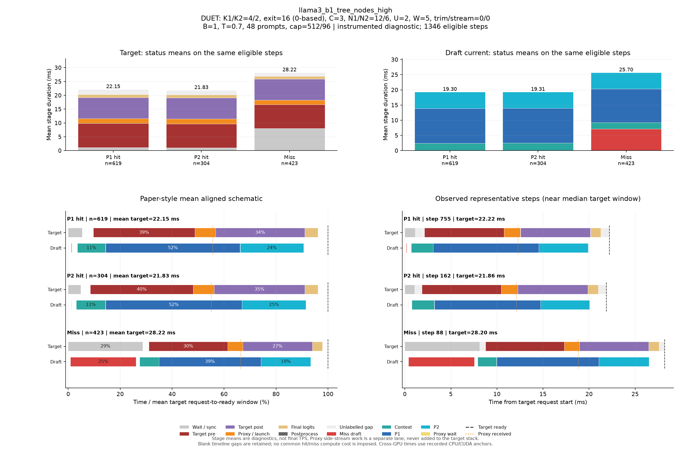

DUET: K1/K2=4/2, exit=16 (0-based), C=3, N1/N2=12/6, U=2, W=5, trim/stream=0/0
| Pass | 용도 | N | B | T | Seed | AL* | Cache hit | TPS* | Raw TPS |
|---|---|---|---|---|---|---|---|---|---|
| 0 | profile-diagnostic | 48 | 1 | 0.7 | 5100 | 2.745 | 68.67% | 95.71 | 95.95 |
Input/output cap: 512/96 · GPUs: 4,5 · draft seed: 0 · source: 81ea7775bbda8fed1e0edc00a612ee3d8bb3f3ae
PNG · 벡터 PDF · 원본 결과 JSON
세부 trace: 1346 eligible steps. Target 원본 · Draft 원본
제외 수: {"initial": 19, "output_boundary": 43, "capture_or_next": 6}
왼쪽 아래는 상태별 평균 정렬 schematic, 오른쪽 아래는 실제 대표 step입니다. %의 분모는 각 상태의 평균 target request→ready 시간이며 phase overlap은 별도 lane에 표시합니다.

{
"args": {
"target": "/data/chokwans99/models/layerskip-llama3-8B",
"draft": "/home/chokwans99/models_mlsys/Qwama-0.5B-Instruct",
"mode": "duet-tree",
"batches": [
1
],
"temperatures": [
0.7
],
"seeds": [
5100
],
"target_tp": 1,
"prompts": "/home/chokwans99/PSD-mlsys-coverage/results/mlsys_coverage/round5/tuning48.json",
"limit": 0,
"max_new_tokens": 96,
"max_model_len": 2048,
"input_cap": 512,
"k1": 4,
"k2": 2,
"draft_fan_out": 2,
"proxy_fan_out": 1,
"p1_tree": true,
"p1_verify_nodes": null,
"p2_verify_nodes": null,
"exit_layer": 16,
"p1_nodes": 12,
"p2_nodes": 6,
"tree_width": 3,
"p1_roots": 2,
"p2_budget": null,
"tree_root_count": null,
"tree_beta": 0.5,
"tree_proxy_threshold": 0.01,
"tree_conf_threshold": 0.03,
"root_source": "complement",
"root_normalization": "full",
"root_overlap_mix": 0.25,
"memory_fraction": 0.45,
"ignore_eos": false,
"greedy_only": false,
"audit_preemption": false,
"ragged_limits": false,
"tree_calibration_dir": null,
"preflight_test": null,
"output": "/home/chokwans99/PSD-mlsys-coverage/results/mlsys_coverage/round5/llama3_b1_tree/llama3_b1_tree_nodes_high.json"
},
"engine_kwargs": {
"num_gpus": 2,
"max_num_seqs": 1,
"max_model_len": 2048,
"max_num_batched_tokens": 2048,
"gpu_memory_utilization": 0.45,
"speculate": true,
"draft_async": true,
"greedy_only": false,
"jit_speculate": true,
"speculate_k": 6,
"async_fan_out": 3,
"duet_p1_tree_policy": "on",
"duet_p2_tree_policy": "on",
"draft": "/home/chokwans99/models_mlsys/Qwama-0.5B-Instruct",
"duet_enabled": true,
"duet_exit_layer": 16,
"duet_phase1_k": 4,
"duet_phase2_k": 2,
"duet_draft_fan_out": 2,
"duet_p2_tree_max_nodes": 6,
"duet_p2_tree_verify_nodes": 6,
"duet_p1_tree_max_nodes": 12,
"duet_p1_tree_verify_nodes": 12,
"duet_tree_c_tensor": 3,
"duet_p1_roots_per_position": 2,
"duet_p2_budget": null,
"duet_tree_root_count": null,
"duet_tree_beta": 0.5,
"duet_tree_proxy_threshold": 0.01,
"duet_tree_conf_threshold": 0.03,
"duet_root_source": "complement",
"duet_root_normalization": "full",
"duet_root_overlap_mix": 0.25
},
"env": {
"CUDA_VISIBLE_DEVICES": "4,5",
"SSD_CUDA_ARCH": "8.9",
"SSD_ATTN_BACKEND": "auto",
"SSD_DIST_PORT": "30807",
"OMP_NUM_THREADS": "4",
"SSD_SEED": "0",
"SSD_CHAIN_PROXY_GRAPH": "1",
"SSD_FAST_VERIFY": "1",
"SSD_BATCHED_PROXY_GRAPH": "1",
"SSD_DUET_EXIT_REPLICA": "0",
"SSD_ASYNC_PROXY_SEND": "1",
"SSD_PROXY_STREAM": "0",
"SSD_BATCHED_TREE": "1",
"SSD_TREE_EXPANSION_POLICY": "reach_gain_frontier",
"SSD_TREE_REACH_CALIBRATION": "/home/chokwans99/PSD-mlsys-coverage/results/mlsys_coverage/round4/calibration/reach.json",
"SSD_TREE_GAIN_CALIBRATION": "/home/chokwans99/PSD-mlsys-coverage/results/mlsys_coverage/round4/calibration/gain.json",
"SSD_DUET_MISS_K": "4",
"SSD_TREE_FUSED_MATH": "1",
"SSD_BATCH_TREE_BULK_EXPORT": "1",
"SSD_TREE_PARALLEL_INSERT": "0",
"SSD_PROFILE_DUET": "1",
"SSD_PROFILE_DUET_MAX_EVENTS": "100000",
"SSD_TREE_SHAPE_METRICS": "1",
"SSD_PROFILE_DIR": "/home/chokwans99/PSD-mlsys-coverage/results/mlsys_coverage/round5/profiles/llama3_b1_tree_nodes_high",
"SSD_HF_CACHE": "/data/chokwans99/models",
"SSD_DATASET_DIR": "/home/chokwans99/PSD-mlsys-coverage/results/mlsys_coverage/round5"
},
"effective_features": {
"fast_verify": true,
"batched_proxy_graph": true,
"exit_replica": false,
"jit_speculate": true,
"duet_jit_short": true,
"miss_depth": 4,
"miss_width": 1,
"tree_fused_math": true,
"tree_parallel_insert": false,
"bulk_export": true
},
"resolved_env": {
"SSD_CUDA_ARCH": "8.9",
"SSD_ATTN_BACKEND": "auto",
"SSD_DIST_PORT": "30807",
"SSD_SEED": "0",
"SSD_CHAIN_PROXY_GRAPH": "1",
"SSD_FAST_VERIFY": "1",
"SSD_BATCHED_PROXY_GRAPH": "1",
"SSD_DUET_EXIT_REPLICA": "0",
"SSD_ASYNC_PROXY_SEND": "1",
"SSD_PROXY_STREAM": "0",
"SSD_BATCHED_TREE": "1",
"SSD_TREE_EXPANSION_POLICY": "reach_gain_frontier",
"SSD_TREE_REACH_CALIBRATION": "/home/chokwans99/PSD-mlsys-coverage/results/mlsys_coverage/round4/calibration/reach.json",
"SSD_TREE_GAIN_CALIBRATION": "/home/chokwans99/PSD-mlsys-coverage/results/mlsys_coverage/round4/calibration/gain.json",
"SSD_DUET_MISS_K": "4",
"SSD_TREE_FUSED_MATH": "1",
"SSD_BATCH_TREE_BULK_EXPORT": "1",
"SSD_TREE_PARALLEL_INSERT": "0",
"SSD_PROFILE_DUET": "1",
"SSD_PROFILE_DUET_MAX_EVENTS": "100000",
"SSD_TREE_SHAPE_METRICS": "1",
"SSD_PROFILE_DIR": "/home/chokwans99/PSD-mlsys-coverage/results/mlsys_coverage/round5/profiles/llama3_b1_tree_nodes_high",
"SSD_HF_CACHE": "/data/chokwans99/models",
"SSD_DATASET_DIR": "/home/chokwans99/PSD-mlsys-coverage/results/mlsys_coverage/round5",
"SSD_FORCE_SPLIT_K1K2": "1",
"SSD_DUET_JIT_SHORT": "1",
"SSD_SHM_NAME": "ssd_2580205"
},
"runtime_source_sha256": {
"ssd/ssd/__init__.py": "f1a221b38f55b42ef0619cba48a411acbbd1965c4845b4643f77443b7ce77950",
"ssd/ssd/config.py": "865ddb5e09ec11f4bc8511dad3f5abad39a6ab412cf0bbcd6213179b5245fa31",
"ssd/ssd/engine/block_manager.py": "05d873619b419d31f47b4be4025bc7c9f11759f5f0bc3f65fbff3a1e8f94660a",
"ssd/ssd/engine/draft_runner.py": "8cb7e22f725de2c0d9c85912ae04f88f1674f34c0cee4b5beccc9a3b5be1c174",
"ssd/ssd/engine/helpers/batch_tree_common.py": "739feeb975c20d0adbdae51735b8983aa6cae8b59d6237b285db0c766d558f27",
"ssd/ssd/engine/helpers/batch_tree_draft.py": "f361030685350183884cc55b9058945515bb00da53fc86541f7902bfd2138528",
"ssd/ssd/engine/helpers/batch_tree_forward.py": "0c6079d2bdbf7ecc000b2a98b94b49b1942939d34ada80b15f57510de8a20940",
"ssd/ssd/engine/helpers/batch_tree_inputs.py": "c0a05d13ba0e63ecbc920425ddd6a98dc60001d93d73085e75d2d4a9b110a066",
"ssd/ssd/engine/helpers/batch_tree_roots.py": "ad3c4e772392c1043284ac4912d606543f3fd76167135b73e4f72a700e6820c7",
"ssd/ssd/engine/helpers/batch_tree_sampling.py": "46f36658cb189bc080ae0d4b8561f84662290facacccf6600f129eb6e93ee66b",
"ssd/ssd/engine/helpers/batch_tree_verify.py": "2da945efe3ba4b2673377a2f5c497528ab0c6cf4d7fd7edfbdb23b6c9c619ede",
"ssd/ssd/engine/helpers/batched_proxy.py": "6ed4f9b85ff8cf9c24b7ad43a1b7377d08123eeef5307366a373dacda184da86",
"ssd/ssd/engine/helpers/batched_tree_executor.py": "098d64cad2d20d96091631f6bc91da73b1e893ec400c3431a4ed68d007a9ef45",
"ssd/ssd/engine/helpers/cudagraph_helpers.py": "0436aec61d05d0b79696a48665042e364f3f4c50d853b68dc424e435b54be0c9",
"ssd/ssd/engine/helpers/e0_trace.py": "23ecd9bce2587cbef3f99c8894964c0d9642d33d372bd7be4954a5a2840a142e",
"ssd/ssd/engine/helpers/mask_helpers.py": "8ada4e709a6ab310ee920a7176b3684f89860022fc659442f6cb02ed5fb87d88",
"ssd/ssd/engine/helpers/p1_tree.py": "f48ae6b01e593d2598262b34007a6b58dde9e57e94138dde62f81d5526637398",
"ssd/ssd/engine/helpers/p2_tree.py": "73b0a512d834ab3a4608d9cd898b13b32630dd3b914b49e753c1116ac0640b41",
"ssd/ssd/engine/helpers/p2_tree_executor.py": "cfb04f959fd08baf3819a688a907cac4e3071a2727085ea08ca089b50a21e82e",
"ssd/ssd/engine/helpers/packed_tree_forward.py": "b903d6fe4d1fe18f95f6540f488acf40d469154100239429256eace61b1d7e76",
"ssd/ssd/engine/helpers/packed_verify.py": "a50ff24e93324840783b60102bfaeb3786711f05f64bd897708c779535c1820f",
"ssd/ssd/engine/helpers/root_policy.py": "5e3a8e2f9b2fe43fec52eb9e80fe59cb0d28177122f7e75c823c5ffd20aee718",
"ssd/ssd/engine/helpers/runner_helpers.py": "bfb570d8e018ee296a6c2a8c3c9e75919fd0eb1beb288ceb80121ad116419bf2",
"ssd/ssd/engine/helpers/speculate_types.py": "2929b5f3a176d04b6a4b01f092b224ad733dfda10a647bb73801cd346441ae91",
"ssd/ssd/engine/helpers/tree_expansion_policy.py": "47f818d1b8f284e56813af294723f6a934c3da0502b9ae4e611b54ba6fb85dac",
"ssd/ssd/engine/helpers/tree_fused_math.py": "930a1215363a3b6f878cbc4a71c3f59293f46aa2eab3c4938e5bb51e95868d2e",
"ssd/ssd/engine/helpers/tree_gain_allocation.py": "6f32c6a7b69272c1b42992d95c546bfd3980ccd71af3b3346e9df61977907b6a",
"ssd/ssd/engine/helpers/tree_host_topology.py": "86d0deab4da2932540a108c4c2b3560b8634837e71ba23783375c2001e4cf81c",
"ssd/ssd/engine/helpers/tree_layout.py": "4e5e47c54a4efd5a30ae8c528e1d2d9493d12aa5605c0e65c2f86ba874805be1",
"ssd/ssd/engine/helpers/tree_rerank_gpu.py": "e4a8bff8828f983d6eb407504f87f2a9edf08a1750449fe46565e661f892b734",
"ssd/ssd/engine/helpers/tree_topology_gpu.py": "3a6cf8796faabbe8adef56deedf8956c1cf252a31e0491f3b71a8544bdcf89af",
"ssd/ssd/engine/llm_engine.py": "b0081876ef6470f91fa562acc0317074a85afa9aec8322182bda7749153db00f",
"ssd/ssd/engine/model_runner.py": "5fa9e910f38538c276a151113fc490be9c75ae9af2bf35ba6eaa5513b237a421",
"ssd/ssd/engine/scheduler.py": "52a36e8bb2abc26f775562a39bd95ea6cc8c70650e6193ddaa0fad762afb8ae4",
"ssd/ssd/engine/sequence.py": "6894715ef142074b118bfa3018b10826d2748518e9c8b71291064eb99fae9bd9",
"ssd/ssd/engine/speculator_async.py": "cd16395d5e5d7380d29f5a27e1495b6a40758c0452ce2cb40d996e2c3271c114",
"ssd/ssd/engine/speculator_sync.py": "30487afa7f5027735ebd752ca1a53003f1d56350f503ea91931ef64e7aab115e",
"ssd/ssd/engine/step.py": "525d3022561c9eee96ec076032bb27e281af744feb739ddc17e52344a9cafe8f",
"ssd/ssd/engine/verifier.py": "f6795547f278628312d2dd5ab0a28e9f34489b8e6d02038566a65fa3190a0928",
"ssd/ssd/layers/activation.py": "13d88b460e7610df28c6a7c719dd8bf21c5c59ae0f85c94d505d499215618a82",
"ssd/ssd/layers/attention.py": "bbafa69d9b52dedf81542f2c3227b7f061de11c679a6681a16b0c137ccfc672b",
"ssd/ssd/layers/embed_head.py": "b896a56b908d75c8f30462b0b1a4ce634276ddb41165fdaa0220c55a2ddf7257",
"ssd/ssd/layers/fi_attn.py": "4b0a275d020c1c3ce37f4e2a6c04bff12577d6f11feec7d79959652300fc9a0c",
"ssd/ssd/layers/layernorm.py": "a076c8d2e31d2597119d8504a69afd8711b41a29b5ccb7e1bf111a6c7277400e",
"ssd/ssd/layers/linear.py": "82c096262013516c5f0a43f7c28f23aa6db6b14f52cbe1ce1dacc5f9d5c4b0b6",
"ssd/ssd/layers/rotary_embedding.py": "1bcca21cf5e4d81c11a5c55d59a6033874c4e6a0003cc4ae8e1aa6165976a723",
"ssd/ssd/layers/sampler.py": "df22591a229ae5c2f62d4797707470ebccb8e55f7064577bc24a656ed797f213",
"ssd/ssd/llm.py": "496950f31428f674b70e8e137e029aa16dd82fdc8d8b8cc76f9ebdce86f7f653",
"ssd/ssd/models/eagle3_draft_llama3.py": "0d6e713a419cf884fc85984f9a2a6de520119032075a7c99158e0df7e2faca84",
"ssd/ssd/models/llama3.py": "ac801bd73e999f04a6fc862ca1d49bc94c88315456cfb6cb1215a503bcc5e07d",
"ssd/ssd/models/qwen2.py": "6804e3662a173368632e5f05b9893cc0cd28a61ac9bd25dbe8cd6f387ca0d1ca",
"ssd/ssd/models/qwen3.py": "535495bf69933fd9c677275453b801189e2c3c78a94fcc5133fc65b88c9f69c7",
"ssd/ssd/paths.py": "72c52420daaf6d457c60235617efc3f8b1e3ae208a35f3bc45438adc9d7e01ac",
"ssd/ssd/quant/__init__.py": "a69f0de0a516ba2bf9e13680b75b8f5d538c2eb281b095662ed1515f8b0f8698",
"ssd/ssd/quant/adapter.py": "fbb1ce4a198a585c31b0102555d1f84d18b09b0de1b90a5808d93ec8ff7ac271",
"ssd/ssd/quant/awq_calibrate.py": "116807eca0a3e4e001aa24a3344031416e4060a6c1b2e39f59829fba09484126",
"ssd/ssd/quant/build.py": "37f9c72ac69af213f2720c86faf380b8a46baaad0b98bf5f2e3c7fa9b3fbc43c",
"ssd/ssd/quant/config.py": "080c327b2297d0905f8fddc8d994aa7b9dc1086d7703d951471d48cea8723a1d",
"ssd/ssd/quant/importer.py": "c8990b69bc9e4e152e7e80b7f08f273c6a4652c1f7e95a8247f85e50030f4f92",
"ssd/ssd/quant/init_context.py": "6aa3dc3f6e95d8902fa7244d0010110b6fcf1ffdccedd6eaa389204339fc214f",
"ssd/ssd/quant/io.py": "f44f98a57351ff1063b7423d2f8390a565a30796fd6c3beaeaa8825f906e66b5",
"ssd/ssd/quant/loader.py": "14f901b1f53a3650be7eff497f626469e2b1fbc487202c639d33c8dd4c9047fb",
"ssd/ssd/quant/marlin.py": "4f1996e9f63d7109e92a3a7ec5350069ba67d7659f2149e99b84ca3c6626b241",
"ssd/ssd/quant/marlin_utils.py": "f64ec8d7ec8260556abd21e229567971a928882f14b93d288a6732d55c12fc90",
"ssd/ssd/quant/naming.py": "7ba73900af5e6d6fa2d1907bd2611625fc72f28a1fb9ea4834cd9a45901632d6",
"ssd/ssd/quant/pack.py": "b7dd683b7cdbfbb6f4ce1e13a51a72240a8dc3a35b7ed652dc664d26bb384711",
"ssd/ssd/quant/state.py": "82cb1050a3b1776765df7ad8f6c59c23a86ac8d1d4cc3c974cded7f8e762f806",
"ssd/ssd/sampling_params.py": "7f79868c4ca115bb18e017411a6c5545f354aa858aa0b8076aafb756d0785032",
"ssd/ssd/utils/async_helpers/async_spec_helpers.py": "0d70779098c5051fcba5d3add5ff0b7896139f1b7789babe701a8df6eaa40f24",
"ssd/ssd/utils/async_helpers/duet_policy.py": "1fb3e1ec1c41a9cda5f531f8c732b09145c7d87ea79d74c331b8176f11f22aaf",
"ssd/ssd/utils/async_helpers/nccl_pack.py": "6330e785f3e81acffe25a82061d3098f7834ad3c2d07bb071d79ed9923b18dc1",
"ssd/ssd/utils/async_helpers/tests.py": "6491ced36a2a6f06d8cf411204b1190d2ca0bc700cd0becf79c3f4cd8abcd87e",
"ssd/ssd/utils/context.py": "ce55eb45f00c91412946dd1c96f5c8f972372dd4c8069770c48e120773f301fc",
"ssd/ssd/utils/int8_debug.py": "9a71dbf2b997a9c8d9b776cc3659c8dbf32ce5411eb5cedb4a73368cee60d3d7",
"ssd/ssd/utils/loader.py": "c008eac34810772e8d9f51da896c00867481f3e1a0e6f725e0d06599c0aab59e",
"ssd/ssd/utils/misc.py": "1084b630f174d651b78b01c4ba2dff147f18d3cf52a200704b4b9eab2b72b66c",
"ssd/ssd/utils/quantize.py": "c0ee73d55f3781eba88007325d5e9e53e66ad952e0e8f19143aa8c50bc39f406",
"ssd/ssd/utils/verify.py": "0cf11b9ba19a73e9c39087fccde43071464c6f3b964e00081ebadc747ef142a4",
"ssd/ssd/utils/verify_fast.py": "23b05b7e5032fe72c8f2ef5bd7a69aa874818b08b52ea7fc0344a54c76ea28d9",
"ssd/bench/mlsys_campaign.py": "059b6316ba33e867e1fcf099a8180c186fa70b916692eca386d2a4a347b0f26f",
"ssd/bench/mlsys_coverage.py": "70b2afaf05bbbd5760c2a4f96f801976479209ca1d7a8f9eb8598139e686bdbc",
"ssd/bench/mlsys_greedy_audit.py": "b9815fd03ded7f30f7c0408629782156e73f5ceaab9f0b3b720956f5c00da141",
"ssd/bench/mlsys_preemption_audit.py": "f891ff5a69a59fb8c93e7952f9d48ac16adb7fef074763089f14d4505ecad80d",
"ssd/bench/mlsys_summarize.py": "0235aa2b56eb59c41c429351d77e90e16c52ccdf58c43e3578dd03df0f6095bd",
"ssd/bench/mlsys_tree_observer.py": "8c18248c9ef1953e2e821613099f14d155978540536939288d4fb2aa897c6263",
"ssd/bench/mlsys_verify_bench.py": "3ddc36197874d239f41a1c135570d4d7a0940d615d3d396299bae46e377bce2e"
}
}{
"groups": [
{
"status": "P1 hit",
"n": 619,
"mean_target_ms": 22.149611277033323,
"mean_decode_ms": 22.193197582988294,
"mean_intervals": [
{
"lane": "Draft current",
"label": "Context",
"start": 0.7795511929014388,
"end": 3.171296292630074
},
{
"lane": "Draft current",
"label": "Miss draft",
"start": 0.2597517474209935,
"end": 0.29941058890692446
},
{
"lane": "Draft current",
"label": "P1",
"start": 3.192891143635517,
"end": 14.648130168822355
},
{
"lane": "Draft current",
"label": "P2",
"start": 14.653525720697997,
"end": 20.063558912046123
},
{
"lane": "Draft current",
"label": "Proxy wait",
"start": 14.649890831098418,
"end": 14.65157891359776
},
{
"lane": "Target",
"label": "Final logits",
"start": 20.164049862659805,
"end": 21.285351858770714
},
{
"lane": "Target",
"label": "Postprocess",
"start": 22.13073947818676,
"end": 22.149611277033323
},
{
"lane": "Target",
"label": "Proxy / launch",
"start": 10.786235340577528,
"end": 12.55449815867213
},
{
"lane": "Target",
"label": "Target post",
"start": 12.556280923775594,
"end": 20.16225134575309
},
{
"lane": "Target",
"label": "Target pre",
"start": 2.1432943814020358,
"end": 10.784323243601834
},
{
"lane": "Target",
"label": "Wait / sync",
"start": 0.0,
"end": 1.1728815454658668
}
],
"components": [
{
"lane": "Draft current",
"label": "Context",
"mean_ms": 2.391745099728635,
"present_steps": 619,
"population": 619
},
{
"lane": "Draft current",
"label": "Miss draft",
"mean_ms": 0.039658841485930955,
"present_steps": 619,
"population": 619
},
{
"lane": "Draft current",
"label": "P1",
"mean_ms": 11.455239025186838,
"present_steps": 619,
"population": 619
},
{
"lane": "Draft current",
"label": "P2",
"mean_ms": 5.410033191348123,
"present_steps": 619,
"population": 619
},
{
"lane": "Draft current",
"label": "Proxy wait",
"mean_ms": 0.001688082499342319,
"present_steps": 619,
"population": 619
},
{
"lane": "Target",
"label": "Final logits",
"mean_ms": 1.121301996110907,
"present_steps": 619,
"population": 619
},
{
"lane": "Target",
"label": "Postprocess",
"mean_ms": 0.01887179884656373,
"present_steps": 619,
"population": 619
},
{
"lane": "Target",
"label": "Proxy / launch",
"mean_ms": 1.7682628180946018,
"present_steps": 619,
"population": 619
},
{
"lane": "Target",
"label": "Target post",
"mean_ms": 7.6059704219774975,
"present_steps": 619,
"population": 619
},
{
"lane": "Target",
"label": "Target pre",
"mean_ms": 8.641028862199798,
"present_steps": 619,
"population": 619
},
{
"lane": "Target",
"label": "Unlabelled gap",
"mean_ms": 1.821293834338088,
"present_steps": 619,
"population": 619
},
{
"lane": "Target",
"label": "Wait / sync",
"mean_ms": 1.1728815454658668,
"present_steps": 619,
"population": 619
}
],
"mean_markers": {
"Final logits": 21.285351858770714,
"Target ready": 22.149611277033323,
"Proxy received": 12.317039183923232
},
"representative": {
"step_id": 755,
"status": "P1 hit",
"target_ms": 22.21875,
"decode_ms": 22.26251387037337,
"source_counts": {
"1": 1
},
"physical_queries": 13,
"max_valid_nodes": 12,
"unlabelled_target_ms": 1.9414069652557373,
"intervals": [
{
"label": "Wait / sync",
"start": 0.0,
"end": 1.109375,
"lane": "Target",
"original_label": "target_spec_wait"
},
{
"label": "Target pre",
"start": 2.113281011581421,
"end": 10.753906011581421,
"lane": "Target",
"original_label": "batch_target_pre"
},
{
"label": "Proxy / launch",
"start": 10.757812023162842,
"end": 12.542968988418579,
"lane": "Target",
"original_label": "batch_target_proxy"
},
{
"label": "Target post",
"start": 12.546875,
"end": 20.148437023162842,
"lane": "Target",
"original_label": "batch_target_post"
},
{
"label": "Final logits",
"start": 20.15234398841858,
"end": 21.273437023162842,
"lane": "Target",
"original_label": "batch_target_final_logits"
},
{
"label": "Postprocess",
"start": 22.19921898841858,
"end": 22.21875,
"lane": "Target",
"original_label": "target_postprocess"
},
{
"label": "Unlabelled gap",
"start": 1.109375,
"end": 2.113281011581421,
"lane": "Target",
"original_label": "derived_gap"
},
{
"label": "Unlabelled gap",
"start": 10.753906011581421,
"end": 10.757812023162842,
"lane": "Target",
"original_label": "derived_gap"
},
{
"label": "Unlabelled gap",
"start": 12.542968988418579,
"end": 12.546875,
"lane": "Target",
"original_label": "derived_gap"
},
{
"label": "Unlabelled gap",
"start": 20.148437023162842,
"end": 20.15234398841858,
"lane": "Target",
"original_label": "derived_gap"
},
{
"label": "Unlabelled gap",
"start": 21.273437023162842,
"end": 22.19921898841858,
"lane": "Target",
"original_label": "derived_gap"
},
{
"label": "Miss draft",
"start": 0.15623903274536133,
"end": 0.19139504432678223,
"lane": "Draft current",
"original_label": "batch_miss_draft"
},
{
"label": "Context",
"start": 0.6913950443267822,
"end": 3.0546770095825195,
"lane": "Draft current",
"original_label": "batch_glue"
},
{
"label": "P1",
"start": 3.0742080211639404,
"end": 14.53905200958252,
"lane": "Draft current",
"original_label": "batch_p1_total"
},
{
"label": "Proxy wait",
"start": 14.53905200958252,
"end": 14.54295802116394,
"lane": "Draft current",
"original_label": "batch_proxy_wait"
},
{
"label": "P2",
"start": 14.54295802116394,
"end": 19.90233302116394,
"lane": "Draft current",
"original_label": "batch_p2_total"
}
],
"previous": [],
"markers": {
"Target ready": 22.21875,
"Final logits": 21.273437023162842,
"Proxy received": 12.285145044326782
}
},
"step_ids": [
20,
21,
22,
23,
24,
26,
29,
30,
31,
32,
33,
34,
36,
38,
40,
43,
45,
46,
48,
49,
50,
52,
53,
55,
56,
57,
58,
59,
60,
63,
64,
65,
66,
67,
69,
73,
77,
78,
80,
81,
82,
83,
84,
85,
86,
87,
89,
93,
94,
95,
96,
97,
111,
112,
114,
119,
123,
126,
132,
140,
144,
145,
159,
160,
161,
163,
164,
166,
167,
168,
169,
173,
174,
175,
177,
178,
181,
182,
191,
192,
193,
194,
195,
196,
197,
198,
199,
201,
202,
206,
212,
217,
219,
222,
223,
225,
226,
228,
229,
231,
232,
236,
237,
238,
239,
240,
241,
247,
254,
258,
260,
261,
262,
263,
270,
273,
274,
275,
276,
277,
278,
279,
280,
283,
284,
285,
286,
287,
289,
290,
291,
297,
301,
302,
303,
306,
310,
312,
315,
316,
317,
318,
319,
321,
322,
323,
324,
325,
330,
331,
332,
333,
340,
342,
345,
346,
347,
353,
356,
357,
360,
361,
365,
367,
372,
377,
387,
388,
391,
396,
398,
401,
404,
414,
420,
429,
434,
437,
448,
452,
453,
455,
457,
460,
461,
462,
463,
464,
465,
466,
467,
468,
469,
470,
475,
480,
481,
484,
486,
488,
492,
494,
495,
498,
499,
500,
501,
504,
509,
511,
520,
522,
525,
527,
528,
535,
539,
541,
542,
543,
545,
550,
551,
553,
554,
555,
556,
557,
558,
559,
560,
561,
562,
563,
564,
565,
566,
569,
571,
574,
575,
577,
579,
581,
582,
583,
584,
586,
587,
589,
590,
591,
592,
593,
596,
598,
604,
607,
612,
613,
614,
621,
623,
624,
626,
627,
629,
630,
634,
635,
636,
637,
638,
639,
640,
641,
642,
643,
644,
645,
646,
647,
650,
651,
652,
654,
663,
664,
675,
677,
678,
681,
683,
686,
687,
688,
693,
696,
697,
698,
700,
701,
704,
708,
713,
717,
722,
724,
728,
729,
730,
733,
736,
737,
738,
739,
742,
743,
752,
755,
756,
757,
758,
759,
760,
762,
763,
764,
765,
766,
767,
771,
774,
784,
785,
786,
788,
789,
794,
796,
802,
806,
809,
810,
811,
814,
815,
816,
822,
823,
825,
829,
830,
831,
833,
837,
838,
840,
842,
844,
845,
847,
852,
854,
856,
857,
861,
867,
868,
869,
871,
876,
882,
887,
891,
892,
893,
894,
895,
896,
897,
898,
903,
904,
906,
914,
920,
924,
926,
931,
932,
937,
938,
940,
941,
942,
950,
952,
954,
955,
957,
958,
963,
964,
965,
966,
968,
969,
970,
973,
979,
983,
984,
988,
989,
990,
991,
992,
993,
994,
995,
996,
999,
1001,
1003,
1005,
1006,
1007,
1010,
1013,
1016,
1017,
1018,
1020,
1022,
1023,
1024,
1026,
1027,
1029,
1030,
1031,
1032,
1033,
1034,
1035,
1036,
1039,
1041,
1042,
1043,
1047,
1048,
1050,
1052,
1053,
1058,
1059,
1061,
1064,
1067,
1072,
1074,
1075,
1077,
1078,
1079,
1080,
1082,
1086,
1087,
1088,
1089,
1095,
1096,
1097,
1099,
1103,
1104,
1105,
1107,
1113,
1115,
1118,
1119,
1122,
1123,
1124,
1125,
1126,
1127,
1128,
1129,
1130,
1137,
1145,
1151,
1153,
1155,
1157,
1159,
1164,
1169,
1178,
1183,
1187,
1189,
1192,
1196,
1197,
1198,
1199,
1201,
1203,
1206,
1207,
1208,
1209,
1220,
1225,
1226,
1228,
1230,
1232,
1234,
1236,
1238,
1240,
1241,
1242,
1245,
1248,
1249,
1253,
1254,
1255,
1259,
1261,
1263,
1264,
1265,
1266,
1267,
1269,
1270,
1272,
1274,
1276,
1277,
1278,
1283,
1287,
1288,
1289,
1292,
1293,
1294,
1295,
1297,
1298,
1300,
1301,
1305,
1308,
1310,
1311,
1313,
1317,
1322,
1323,
1324,
1325,
1326,
1327,
1328,
1329,
1336,
1337,
1340,
1341,
1344,
1345,
1346,
1350,
1358,
1360,
1365,
1368,
1371,
1373,
1375,
1376,
1377,
1379,
1380,
1381,
1383,
1385,
1386,
1391,
1393,
1396,
1397,
1398,
1399,
1400,
1401,
1402,
1403,
1404,
1405,
1406,
1407,
1408,
1409,
1410,
1411,
1412,
1413
],
"query_shapes": {
"5": 67,
"13": 552
}
},
{
"status": "P2 hit",
"n": 304,
"mean_target_ms": 21.826595896168758,
"mean_decode_ms": 21.870325230625703,
"mean_intervals": [
{
"lane": "Draft current",
"label": "Context",
"start": 0.6761688307711953,
"end": 3.120601148981797
},
{
"lane": "Draft current",
"label": "Miss draft",
"start": 0.23801994637439125,
"end": 0.2771852518382825
},
{
"lane": "Draft current",
"label": "P1",
"start": 3.142111231621943,
"end": 14.588843629548425
},
{
"lane": "Draft current",
"label": "P2",
"start": 14.594009113939185,
"end": 19.97222792004284
},
{
"lane": "Draft current",
"label": "Proxy wait",
"start": 14.590539760495487,
"end": 14.592287294174495
},
{
"lane": "Target",
"label": "Final logits",
"start": 19.865195818637545,
"end": 20.986340958036873
},
{
"lane": "Target",
"label": "Postprocess",
"start": 21.80737299511307,
"end": 21.826595896168758
},
{
"lane": "Target",
"label": "Proxy / launch",
"start": 10.490581310109087,
"end": 12.256771686045747
},
{
"lane": "Target",
"label": "Target post",
"start": 12.258731233446222,
"end": 19.863300510142977
},
{
"lane": "Target",
"label": "Target pre",
"start": 1.850450995721315,
"end": 10.488653886475062
},
{
"lane": "Target",
"label": "Wait / sync",
"start": 0.0,
"end": 1.0513209104537964
}
],
"components": [
{
"lane": "Draft current",
"label": "Context",
"mean_ms": 2.444432318210602,
"present_steps": 304,
"population": 304
},
{
"lane": "Draft current",
"label": "Miss draft",
"mean_ms": 0.03916530546389128,
"present_steps": 304,
"population": 304
},
{
"lane": "Draft current",
"label": "P1",
"mean_ms": 11.446732397926482,
"present_steps": 304,
"population": 304
},
{
"lane": "Draft current",
"label": "P2",
"mean_ms": 5.378218806103656,
"present_steps": 304,
"population": 304
},
{
"lane": "Draft current",
"label": "Proxy wait",
"mean_ms": 0.0017475336790084839,
"present_steps": 304,
"population": 304
},
{
"lane": "Target",
"label": "Final logits",
"mean_ms": 1.1211451393993277,
"present_steps": 304,
"population": 304
},
{
"lane": "Target",
"label": "Postprocess",
"mean_ms": 0.01922290105568735,
"present_steps": 304,
"population": 304
},
{
"lane": "Target",
"label": "Proxy / launch",
"mean_ms": 1.7661903759366588,
"present_steps": 304,
"population": 304
},
{
"lane": "Target",
"label": "Target post",
"mean_ms": 7.604569276696758,
"present_steps": 304,
"population": 304
},
{
"lane": "Target",
"label": "Target pre",
"mean_ms": 8.638202890753746,
"present_steps": 304,
"population": 304
},
{
"lane": "Target",
"label": "Unlabelled gap",
"mean_ms": 1.6259444018727855,
"present_steps": 304,
"population": 304
},
{
"lane": "Target",
"label": "Wait / sync",
"mean_ms": 1.0513209104537964,
"present_steps": 304,
"population": 304
}
],
"mean_markers": {
"Final logits": 20.986340958036873,
"Target ready": 21.826595896168758,
"Proxy received": 12.018923008912488
},
"representative": {
"step_id": 162,
"status": "P2 hit",
"target_ms": 21.861328125,
"decode_ms": 21.903479006141424,
"source_counts": {
"2": 1
},
"physical_queries": 13,
"max_valid_nodes": 6,
"unlabelled_target_ms": 1.6640639305114746,
"intervals": [
{
"label": "Wait / sync",
"start": 0.0,
"end": 1.0449211597442627,
"lane": "Target",
"original_label": "target_spec_wait"
},
{
"label": "Target pre",
"start": 1.8378901481628418,
"end": 10.466796159744263,
"lane": "Target",
"original_label": "batch_target_pre"
},
{
"label": "Proxy / launch",
"start": 10.46875,
"end": 12.253906011581421,
"lane": "Target",
"original_label": "batch_target_proxy"
},
{
"label": "Target post",
"start": 12.253906011581421,
"end": 19.855468034744263,
"lane": "Target",
"original_label": "batch_target_post"
},
{
"label": "Final logits",
"start": 19.857421159744263,
"end": 20.978515148162842,
"lane": "Target",
"original_label": "batch_target_final_logits"
},
{
"label": "Postprocess",
"start": 21.845703125,
"end": 21.861328125,
"lane": "Target",
"original_label": "target_postprocess"
},
{
"label": "Unlabelled gap",
"start": 1.0449211597442627,
"end": 1.8378901481628418,
"lane": "Target",
"original_label": "derived_gap"
},
{
"label": "Unlabelled gap",
"start": 10.466796159744263,
"end": 10.46875,
"lane": "Target",
"original_label": "derived_gap"
},
{
"label": "Unlabelled gap",
"start": 19.855468034744263,
"end": 19.857421159744263,
"lane": "Target",
"original_label": "derived_gap"
},
{
"label": "Unlabelled gap",
"start": 20.978515148162842,
"end": 21.845703125,
"lane": "Target",
"original_label": "derived_gap"
},
{
"label": "Miss draft",
"start": 0.31248903274536133,
"end": 0.3515510559082031,
"lane": "Draft current",
"original_label": "batch_miss_draft"
},
{
"label": "Context",
"start": 0.7617080211639404,
"end": 3.1933481693267822,
"lane": "Draft current",
"original_label": "batch_glue"
},
{
"label": "P1",
"start": 3.2167861461639404,
"end": 14.707020044326782,
"lane": "Draft current",
"original_label": "batch_p1_total"
},
{
"label": "Proxy wait",
"start": 14.708973169326782,
"end": 14.708973169326782,
"lane": "Draft current",
"original_label": "batch_proxy_wait"
},
{
"label": "P2",
"start": 14.710926055908203,
"end": 20.06053614616394,
"lane": "Draft current",
"original_label": "batch_p2_total"
}
],
"previous": [],
"markers": {
"Target ready": 21.861328125,
"Final logits": 20.978515148162842,
"Proxy received": 12.113270044326782
}
},
"step_ids": [
27,
28,
35,
39,
62,
68,
74,
75,
79,
90,
91,
92,
99,
105,
108,
113,
115,
122,
128,
147,
154,
155,
156,
162,
165,
170,
171,
172,
176,
180,
183,
185,
186,
189,
190,
200,
208,
209,
210,
211,
214,
216,
220,
221,
224,
243,
244,
245,
246,
249,
251,
252,
259,
264,
265,
268,
281,
288,
293,
294,
296,
298,
304,
305,
320,
328,
329,
339,
343,
348,
350,
354,
358,
375,
376,
378,
382,
383,
389,
393,
403,
408,
410,
421,
422,
423,
424,
425,
427,
428,
430,
433,
435,
441,
443,
445,
446,
447,
449,
450,
451,
458,
478,
482,
483,
491,
496,
497,
503,
510,
515,
517,
518,
531,
532,
536,
538,
544,
572,
573,
580,
599,
606,
608,
609,
611,
616,
617,
618,
620,
628,
633,
649,
660,
661,
662,
666,
667,
669,
673,
676,
679,
684,
685,
690,
691,
692,
707,
712,
714,
721,
723,
725,
731,
741,
744,
749,
750,
751,
761,
769,
773,
776,
779,
787,
791,
798,
799,
800,
805,
807,
808,
812,
817,
818,
828,
839,
841,
850,
851,
853,
855,
862,
864,
872,
874,
875,
877,
881,
884,
886,
888,
907,
908,
910,
911,
912,
916,
917,
921,
925,
928,
929,
933,
936,
945,
947,
948,
951,
953,
967,
972,
974,
985,
986,
997,
998,
1000,
1004,
1011,
1012,
1019,
1021,
1044,
1045,
1046,
1049,
1056,
1057,
1062,
1063,
1076,
1081,
1084,
1085,
1090,
1091,
1109,
1111,
1120,
1121,
1131,
1135,
1136,
1140,
1143,
1144,
1148,
1150,
1152,
1154,
1156,
1158,
1160,
1162,
1166,
1167,
1170,
1171,
1172,
1173,
1176,
1179,
1191,
1204,
1205,
1215,
1216,
1217,
1219,
1222,
1233,
1243,
1251,
1256,
1257,
1260,
1262,
1268,
1273,
1279,
1284,
1296,
1302,
1303,
1304,
1306,
1307,
1309,
1319,
1334,
1335,
1338,
1342,
1347,
1349,
1354,
1361,
1370,
1374,
1384,
1387,
1388,
1392
],
"query_shapes": {
"13": 270,
"5": 34
}
},
{
"status": "Miss",
"n": 423,
"mean_target_ms": 28.224609400927317,
"mean_decode_ms": 28.272489322477128,
"mean_intervals": [
{
"lane": "Draft current",
"label": "Context",
"start": 7.741724301173614,
"end": 9.841887716424099
},
{
"lane": "Draft current",
"label": "Miss draft",
"start": 0.2410039642460239,
"end": 7.37031657419588
},
{
"lane": "Draft current",
"label": "P1",
"start": 9.844228715197696,
"end": 20.945661919618612
},
{
"lane": "Draft current",
"label": "P2",
"start": 20.950897977143597,
"end": 26.3218670731177
},
{
"lane": "Draft current",
"label": "Proxy wait",
"start": 20.947388819205283,
"end": 20.949152637598925
},
{
"lane": "Target",
"label": "Final logits",
"start": 26.506602771456922,
"end": 27.617533794249766
},
{
"lane": "Target",
"label": "Postprocess",
"start": 28.20571533331634,
"end": 28.224609400927317
},
{
"lane": "Target",
"label": "Proxy / launch",
"start": 17.324232622804935,
"end": 18.96283983395173
},
{
"lane": "Target",
"label": "Target post",
"start": 18.964594440257297,
"end": 26.504668127560446
},
{
"lane": "Target",
"label": "Target pre",
"start": 8.748513246540764,
"end": 17.322533431064436
},
{
"lane": "Target",
"label": "Wait / sync",
"start": 0.0,
"end": 8.075677811958547
}
],
"components": [
{
"lane": "Draft current",
"label": "Context",
"mean_ms": 2.100163415250485,
"present_steps": 423,
"population": 423
},
{
"lane": "Draft current",
"label": "Miss draft",
"mean_ms": 7.129312609949856,
"present_steps": 423,
"population": 423
},
{
"lane": "Draft current",
"label": "P1",
"mean_ms": 11.101433204420914,
"present_steps": 423,
"population": 423
},
{
"lane": "Draft current",
"label": "P2",
"mean_ms": 5.370969095974104,
"present_steps": 423,
"population": 423
},
{
"lane": "Draft current",
"label": "Proxy wait",
"mean_ms": 0.001763818393644148,
"present_steps": 423,
"population": 423
},
{
"lane": "Target",
"label": "Final logits",
"mean_ms": 1.1109310227928433,
"present_steps": 423,
"population": 423
},
{
"lane": "Target",
"label": "Postprocess",
"mean_ms": 0.01889406761097288,
"present_steps": 423,
"population": 423
},
{
"lane": "Target",
"label": "Proxy / launch",
"mean_ms": 1.6386072111467944,
"present_steps": 423,
"population": 423
},
{
"lane": "Target",
"label": "Target post",
"mean_ms": 7.540073687303151,
"present_steps": 423,
"population": 423
},
{
"lane": "Target",
"label": "Target pre",
"mean_ms": 8.57402018452367,
"present_steps": 423,
"population": 423
},
{
"lane": "Target",
"label": "Unlabelled gap",
"mean_ms": 1.266405415591337,
"present_steps": 423,
"population": 423
},
{
"lane": "Target",
"label": "Wait / sync",
"mean_ms": 8.075677811958547,
"present_steps": 423,
"population": 423
}
],
"mean_markers": {
"Final logits": 27.617533794249766,
"Target ready": 28.224609400927317,
"Proxy received": 18.727997009917637
},
"representative": {
"step_id": 88,
"status": "Miss",
"target_ms": 28.19921898841858,
"decode_ms": 28.240744955837727,
"source_counts": {
"0": 1
},
"physical_queries": 5,
"max_valid_nodes": 4,
"unlabelled_target_ms": 1.2460932731628418,
"intervals": [
{
"label": "Wait / sync",
"start": 0.0,
"end": 8.119140863418579,
"lane": "Target",
"original_label": "target_spec_wait"
},
{
"label": "Target pre",
"start": 8.761718988418579,
"end": 17.30664086341858,
"lane": "Target",
"original_label": "batch_target_pre"
},
{
"label": "Proxy / launch",
"start": 17.30859398841858,
"end": 18.945312976837158,
"lane": "Target",
"original_label": "batch_target_proxy"
},
{
"label": "Target post",
"start": 18.94726586341858,
"end": 26.47070288658142,
"lane": "Target",
"original_label": "batch_target_post"
},
{
"label": "Final logits",
"start": 26.47265601158142,
"end": 27.583984851837158,
"lane": "Target",
"original_label": "batch_target_final_logits"
},
{
"label": "Postprocess",
"start": 28.18164086341858,
"end": 28.19921898841858,
"lane": "Target",
"original_label": "target_postprocess"
},
{
"label": "Unlabelled gap",
"start": 8.119140863418579,
"end": 8.761718988418579,
"lane": "Target",
"original_label": "derived_gap"
},
{
"label": "Unlabelled gap",
"start": 17.30664086341858,
"end": 17.30859398841858,
"lane": "Target",
"original_label": "derived_gap"
},
{
"label": "Unlabelled gap",
"start": 18.945312976837158,
"end": 18.94726586341858,
"lane": "Target",
"original_label": "derived_gap"
},
{
"label": "Unlabelled gap",
"start": 26.47070288658142,
"end": 26.47265601158142,
"lane": "Target",
"original_label": "derived_gap"
},
{
"label": "Unlabelled gap",
"start": 27.583984851837158,
"end": 28.18164086341858,
"lane": "Target",
"original_label": "derived_gap"
},
{
"label": "Miss draft",
"start": 0.39452099800109863,
"end": 7.550770998001099,
"lane": "Draft current",
"original_label": "batch_miss_draft"
},
{
"label": "Context",
"start": 7.8984270095825195,
"end": 9.957020998001099,
"lane": "Draft current",
"original_label": "batch_glue"
},
{
"label": "P1",
"start": 9.95897388458252,
"end": 21.05662989616394,
"lane": "Draft current",
"original_label": "batch_p1_total"
},
{
"label": "Proxy wait",
"start": 21.05858302116394,
"end": 21.06053590774536,
"lane": "Draft current",
"original_label": "batch_proxy_wait"
},
{
"label": "P2",
"start": 21.06248903274536,
"end": 26.49022388458252,
"lane": "Draft current",
"original_label": "batch_p2_total"
}
],
"previous": [],
"markers": {
"Target ready": 28.19921898841858,
"Final logits": 27.583984851837158,
"Proxy received": 18.8300678730011
}
},
"step_ids": [
25,
37,
42,
44,
47,
51,
54,
61,
71,
72,
76,
88,
98,
101,
102,
103,
104,
106,
107,
109,
110,
116,
117,
118,
120,
121,
124,
125,
127,
129,
130,
131,
133,
134,
135,
136,
137,
138,
139,
141,
142,
143,
146,
149,
150,
151,
152,
153,
157,
158,
179,
184,
188,
203,
205,
207,
213,
215,
218,
227,
230,
234,
235,
242,
248,
250,
253,
255,
256,
257,
266,
267,
269,
272,
282,
292,
295,
300,
307,
308,
309,
311,
313,
314,
327,
334,
335,
336,
337,
338,
341,
344,
349,
351,
352,
355,
359,
363,
364,
366,
368,
369,
370,
371,
373,
374,
379,
380,
381,
384,
385,
386,
390,
392,
394,
395,
397,
399,
400,
402,
406,
407,
409,
411,
412,
413,
415,
416,
417,
418,
419,
426,
431,
432,
436,
438,
439,
440,
442,
444,
454,
456,
459,
472,
473,
474,
476,
477,
479,
485,
487,
489,
490,
493,
502,
512,
513,
514,
516,
519,
521,
523,
524,
526,
529,
530,
533,
534,
537,
540,
552,
568,
570,
576,
578,
585,
588,
595,
597,
600,
601,
602,
603,
605,
610,
615,
619,
622,
625,
632,
648,
653,
655,
656,
658,
659,
665,
668,
670,
671,
672,
674,
680,
682,
689,
694,
695,
699,
702,
703,
705,
706,
709,
711,
715,
716,
718,
719,
720,
726,
727,
732,
734,
735,
740,
746,
748,
753,
754,
768,
770,
772,
775,
777,
778,
780,
782,
783,
790,
792,
793,
795,
797,
801,
803,
804,
813,
821,
824,
826,
827,
832,
834,
835,
836,
843,
846,
848,
849,
859,
860,
863,
865,
866,
870,
873,
878,
879,
880,
883,
885,
889,
890,
899,
901,
902,
905,
909,
913,
915,
918,
919,
922,
923,
927,
930,
934,
935,
939,
944,
946,
949,
956,
959,
960,
961,
962,
971,
976,
977,
978,
980,
981,
982,
987,
1002,
1009,
1014,
1015,
1025,
1028,
1038,
1040,
1051,
1054,
1055,
1060,
1066,
1068,
1069,
1070,
1071,
1073,
1083,
1092,
1093,
1094,
1098,
1102,
1106,
1108,
1110,
1112,
1114,
1116,
1117,
1133,
1134,
1138,
1139,
1141,
1142,
1146,
1147,
1149,
1161,
1163,
1165,
1168,
1175,
1177,
1180,
1181,
1182,
1184,
1185,
1186,
1188,
1190,
1193,
1194,
1195,
1200,
1202,
1210,
1212,
1213,
1214,
1218,
1221,
1223,
1224,
1227,
1229,
1231,
1235,
1237,
1239,
1244,
1247,
1250,
1252,
1258,
1271,
1275,
1281,
1282,
1285,
1286,
1290,
1291,
1299,
1312,
1314,
1315,
1316,
1318,
1321,
1330,
1331,
1332,
1333,
1339,
1343,
1348,
1351,
1353,
1355,
1356,
1357,
1359,
1362,
1363,
1364,
1366,
1367,
1369,
1372,
1378,
1382,
1389,
1390,
1395
],
"query_shapes": {
"5": 423
}
}
],
"excluded": {
"initial": 19,
"output_boundary": 43,
"capture_or_next": 6
},
"eligible_steps": 1346,
"trace_paths": [
"profiles/llama3_b1_tree_nodes_high/duet_profile_target_rank0_023159.json",
"profiles/llama3_b1_tree_nodes_high/duet_profile_draft_023200.json"
],
"labelled_capture_count": 4,
"max_target_stage_overlap_ms": 0.0,
"detail_labels_present": false
}